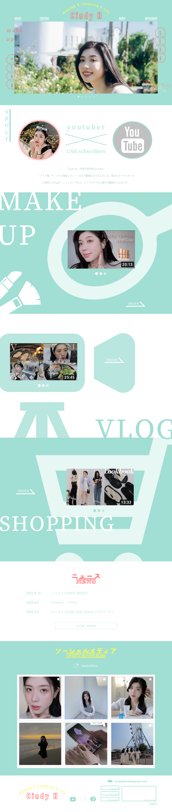

ようこそこのウェブサイトへ、これは私が好きなYoutuberのために設計した仮想空間です！ここではCindy Hの素晴らしいコンテンツ、独占情報、最新の動向が集約されており、彼女の世界をより深く理解できます。
担当
デザイン
サイトの目的
Youtuberのチャンネルを宣伝し、Cindy Hをより深く理解するために。
ターゲット
美容のYouTube視聴者
デザインについて
このウェブサイトの主な目的は、Cindy Hを紹介し、彼女のYouTubeチャンネルを宣伝することです。清新な色彩と女性らしいデザインスタイルが選ばれ、美容とファッションに興味を持つ視聴者を引き寄せることを意図しています。
ツール